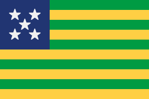
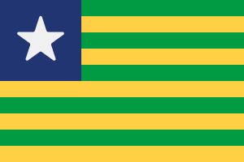
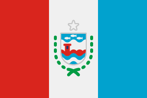
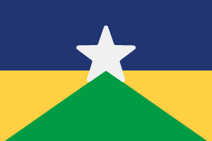
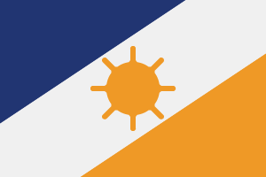
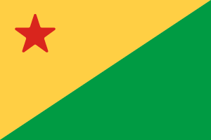
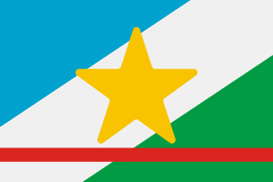

| Posição | Estado | População - Censo 2022 |
|---|---|---|
| 1 | São Paulo | 44 420 459 |
| 2 | Minas Gerais | 20 538 718 |
| 3 | Rio de Janeiro | 16 054 524 |
| 4 | Bahia | 14 136 417 |
| 5 | Paraná | 11 443 208 |
| 6 | Rio Grande do Sul | 10 880 506 |
| 7 | Pernambuco | 9 058 155 |
| 8 | Ceará | 8 791 688 |
| 9 | Pará | 8 116 132 |
| 10 | Santa Catarina | 7 609 601 |
| 11 | Goiás | 7 055 228 |
| 12 | Maranhão | 6 775 152 |
| 13 | Paraíba | 3 974 495 |
| 14 | Amazonas | 3 941 175 |
| 15 | Espírito Santo | 3 833 486 |
| 16 | Mato Grosso | 3 658 813 |
| 17 | Rio Grande do Norte | 3 302 406 |
| 18 | Piauí | 3 269 200 |
| 19 | Alagoas | 3 127 511 |
| 20 | Distrito Federal | 2 817 068 |
| 21 | Mato Grosso do Sul | 2 756 700 |
| 22 | Sergípe | 2 209 558 |
| 23 | Rondônia | 1 581 016 |
| 24 | Tocantins | 1 511 459 |
| 25 | Acre | 830 026 |
| 26 | Amapá | 733 508 |
| 27 | Roraima | 636 303 | População Total | 203.052,512 |